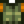

Largemouth Bass
| Largemouth Bass | ||||||||||||||||||||||||||||||||||
| A popular fish that lives in lakes. | ||||||||||||||||||||||||||||||||||
| Information
| ||||||||||||||||||||||||||||||||||
| Location | Mountain Lake • Wilderness Farm | |||||||||||||||||||||||||||||||||
| Time | 6am – 7pm | |||||||||||||||||||||||||||||||||
| Season | ||||||||||||||||||||||||||||||||||
| Weather | Any | |||||||||||||||||||||||||||||||||
| Difficulty | 50 | |||||||||||||||||||||||||||||||||
| Behavior | Mixed | |||||||||||||||||||||||||||||||||
| Size (inches) | 11–31
| |||||||||||||||||||||||||||||||||
| Fishing XP | 19 | |||||||||||||||||||||||||||||||||
| Energy / Health |
| |||||||||||||||||||||||||||||||||
| ||||||||||||||||||||||||||||||||||
| ||||||||||||||||||||||||||||||||||
The Largemouth Bass is a fish that can be caught in the mountain lake during all seasons. It comprises approximately 19% to 20% of all catches there during Spring and Fall, but drops to around 15% during Summer and Winter. It is most likely to be caught when casting farther from shore.[1] It can also be caught on the Wilderness Farm, and can also be gifted by a pet cat with max friendship. It may be randomly found in Garbage Cans, or at the Traveling Cart for  300–1,000g. Linus may randomly send a Largemouth Bass in the mail as a gift.
300–1,000g. Linus may randomly send a Largemouth Bass in the mail as a gift.
Largemouth Bass can be caught regardless of time of day using Magic Bait.
Map
Largemouth Bass can be found in the mountain lake.

Gifting
| Villager Reactions
| |
|---|---|
| Neutral | |
| Dislike | |
| Hate | |
Bundles
- Largemouth Bass is used in the
 Lake Fish Bundle in the Fish Tank.
Lake Fish Bundle in the Fish Tank. - 1 gold/iridium quality Largemouth Bass is used in the
 Quality Fish Bundle in the Fish Tank (Remixed).
Quality Fish Bundle in the Fish Tank (Remixed).
Recipes
| Image | Name | Description | Ingredients | Energy / Health | Buff(s) | Buff Duration | Recipe Source(s) | Sell Price | |||
|---|---|---|---|---|---|---|---|---|---|---|---|
| Crispy Bass | Wow, the breading is perfect. |
|
|||||||||
| Maki Roll | Fish and rice wrapped in seaweed. | N/A | N/A |
|
|||||||
| Quality Fertilizer | Improves soil quality, increasing your chance to grow quality crops. Mix into tilled soil. | N/A | N/A | N/A | |||||||
| Sashimi | Raw fish sliced into thin pieces. | N/A | N/A |
|
Tailoring
Largemouth Bass can be used in the spool of the Sewing Machine to create the Fishing Vest. 
Fish Pond
Largemouth Bass can be placed in a Fish Pond, where they will reproduce every 3 days. The initial pond capacity is 3 fish, but the capacity can be increased to 10 by completing three quests. The only possible output is green Largemouth Bass Roe.
| Pond Capacity | Quest Item | Fishing XP Granted | |
|---|---|---|---|
| Before Quest | After Quest | ||
| 3 | 5 | 10 Bug Meat, 2-3 Clay, 2-3 Green Algae, or 5 Slimes | 35 |
| 5 | 7 | 2-3 Common Mushrooms, 1-2 Earth Crystals, or 1 Limestone | 35 |
| 7 | 10 | 1 Mudstone, 1 Snail, or 5 Wild Bait | 35 |
| Item(s) Produced | Fishing XP Granted | Population | % of Items | Overall Daily Chance |
|---|---|---|---|---|
| Roe (1) | 13 | 1-10 | 90% | 21-86% |
| Nothing | 1-10 | 10% | 79-14% |
Quests
- Jodi requests a Largemouth Bass in the "Fish Casserole" quest once you've reached 4 hearts with her. The reward is a cutscene at Jodi's house.
- Item Delivery: One Largemouth Bass may be randomly requested during any season at the "Help Wanted" board outside Pierre's General Store for a reward of
 300g and 150 Friendship points.
300g and 150 Friendship points. - Fishing: Demetrius or Willy may randomly request 1-4 Largemouth Bass to be caught during any season at the "Help Wanted" board outside Pierre's General Store for a reward of 100g per fish. (You get to keep the fish).
- Aquatic Overpopulation: Demetrius may request 10 Largemouth Bass to be caught in Spring at the Special Orders board outside the Mayor's Manor for a reward of gold equivalent to selling the fish and the Farm Computer recipe.
- Two Largemouth Bass may be requested by Dorado, Lingcod, or Pike in a Fish Pond quest to increase the capacity of the pond from 5 to 7.
References
- ↑ See Data/Fish.xnb and GameLocation::CheckGenericFishRequirements in the game code.
History
- 1.0: Introduced.
- 1.4: Updated sprite. Added iridium quality. Can now be used in Tailoring. Can be requested in Fish Pond quests.
- 1.5: Is now used in a remixed bundle. Special Order quest added.
- 1.6: Can now be gifted by a pet cat with max friendship.